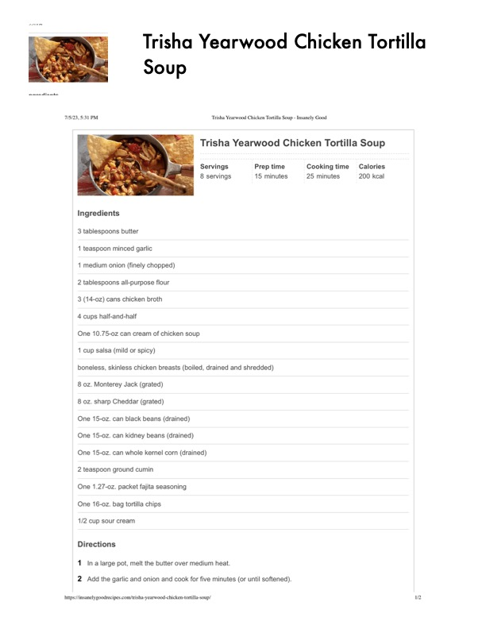

Trisha Yearwood Chicken Tortilla

Original cookbook page 473
Ingredients
- 3 tablespoons butter
- 1 teaspoon minced garlic
- 1 medium onion (finely chopped)
- 2 tablespoons all-purpose flour
- 3 (14-02) cans chicken broth
- 4 cups half-and-half
- One 10.75-0z can cream of chicken soup
- 1 cup salsa (mild or spicy)
- boneless, skinless chicken breasts (boiled, drained and shredded)
- 8 oz. Monterey Jack (grated)
- 8 oz. sharp Cheddar (grated)
- One 15-0z. can black beans (drained)
- One 15-0z. can kidney beans (drained)
- One 15-oz. can whole kernel corn (drained)
- 2 teaspoon ground cumin
- One 1.27-0z. packet fajita seasoning
- One 16-0z. bag tortilla chips
- 1/2 cup sour cream
Instructions
- Ina large pot, melt the butter over medium heat.
- Add the garlic and onion and cook for five minutes (or until softened). buips:/insanelygoodrecipes.com/trisha-yearwood-chicken-tortlla-soup/
Recipe #473 from collection